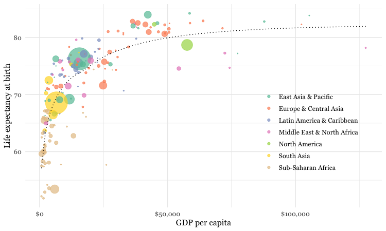
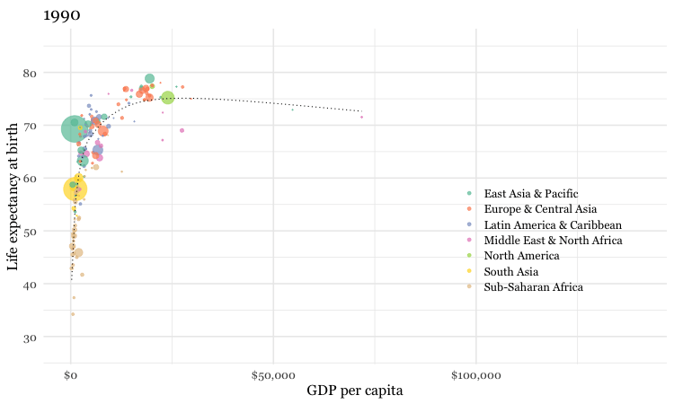
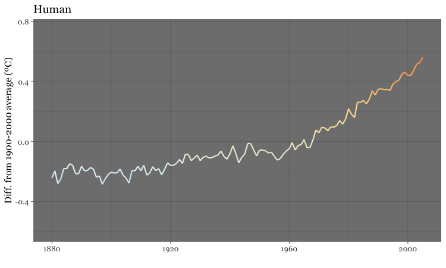

Iteration and animation: Loops, GIFs, and videos
In today’s class, we will make animated GIFs and videos from charts made in R with ggplot2, using the gganimate package. We will also make and edit GIFs and videos using the software libraries ImageMagick and FFmpeg. See the software page for installation instructions.
The data we will use today
Download the data for this session from here, unzip the folder and place it on your desktop. It contains the following folders and files:
nations.csvData from the World Bank Indicators portal, as used in week 3 and subsequently.warming.csvNational Oceanic and Atmospheric Administration data on the annual average global temperature, from 1880 to 2017.yearvalueAverage global temperature, compared to average from 1900-2000.
simulations.csvData from NASA simulations of historical temperatures, estimating the effect of natural and human influences on climate, processed from the raw data used for this piece from Bloomberg News. Contains the following variables:yeartypeNatural or HumanvalueGlobal average temperature from the simulation, relative to average simulated value from 1990-2000.
chartsEmpty folder into which we will save individual frames from which to make an animation.
Setting up
Launch RStudio, create a new RScript, and set the working directory to the folder with your downloaded data by selecting Session>Set Working Directory>To Source File Location. Save the script as week14.R.
Install devtools and gganimate packages
gganimate is not in the main CRAN repository of R pacages, but is available on GitHub. To install from there, you first need to install the devtools package.
# first install devtools
install.packages("devtools")
# then gganimate (and transformr, a dependency that helps with smooth transitions for polygons and lines)
devtools::install_github("thomasp85/gganimate")
devtools::install_github("thomasp85/transformr")
Load the packages we will use today
# load required packages
library(readr)
library(ggplot2)
library(gganimate)
library(scales)
library(dplyr)
Apart from gganimate, we have encountered all of these packages in previous weeks.
Make a Gapminder-style animated bubble chart
In week 8, we made the following chart, showing GDP per capita, life expectancy at birth and population for the world’s nations in 2016:

This was the code to generate that chart:
# load data
nations <- read_csv("nations.csv")
# filter for 2016 data only
nations2016 <- nations %>%
filter(year == 2016)
# make bubble chart
ggplot(nations2016, aes(x = gdp_percap, y = life_expect)) +
xlab("GDP per capita") +
ylab("Life expectancy at birth") +
theme_minimal(base_size = 12, base_family = "Georgia") +
geom_point(aes(size = population, color = region), alpha = 0.7) +
scale_size_area(guide = FALSE, max_size = 15) +
scale_x_continuous(labels = dollar) +
stat_smooth(formula = y ~ log10(x), se = FALSE, size = 0.5, color = "black", linetype="dotted") +
scale_color_brewer(name = "", palette = "Set2") +
theme(legend.position=c(0.8,0.4))
Some reminders about what this code does:
scale_size_areaensures that the size of the circles scales by their area according to the population data, up to the specifiedmax_size;guide = FALSEwithin the brackets of this function prevents a legend for size being drawn.labels = dollarfrom scales formats the X axis labels as currency in dollars.stat_smoothworks likegeom_smoothbut allows you to use aformulato specify the type of curve to use for to trend line fitted to the data, here a logarithmic curve.
Now we will use gganimate to generate an animation of the chart, from 1990 to 2016. Here is the code:
# animate entire time series with gganimate
nations_plot <- ggplot(nations, aes(x = gdp_percap, y = life_expect)) +
xlab("GDP per capita") +
ylab("Life expectancy at birth") +
theme_minimal(base_size = 12, base_family = "Georgia") +
geom_point(aes(size = population, color = region), alpha = 0.7) +
scale_size_area(guide = FALSE, max_size = 15) +
scale_x_continuous(labels = dollar) +
stat_smooth(formula = y ~ log10(x), se = FALSE, size = 0.5, color = "black", linetype="dotted") +
scale_color_brewer(name = "", palette = "Set2") +
theme(legend.position=c(0.8,0.4)) +
# gganimate code
ggtitle("{frame_time}") +
transition_time(year) +
ease_aes("linear") +
enter_fade() +
exit_fade()
Running this code will create an R object of type gganim called nations_plot.
Now display it in the Viewer panel by running the following:
animate(nations_plot)
How the gganimate code works
transition_timeThis function animates the data byyear, showing only the data that is relevant for any one point in time. As well as generating a frame for each year, it also generates intermediate frames to give a smooth animation.- Using
"{frame_time}"within theggtitlefunction puts a title on each frame with the corresponding value from the variable in thetransition_timefunction, hereyear. ease_aesThis controls how the animation progresses. If animating over a time series, always use the option"linear"to ensure a constant speed for the animation. Other available options can be used when animating between different states of a chart, rather than over time, as we will see below.enter_fadeexit_fadeThese functions control the behavior where a data point appears or disappears from the animation. You can also useenter_shrinkandexit_shrink.
Save as a GIF and a video
We can now save the animation as a GIF or video
# save as a GIF
animate(nations_plot, fps = 10, width = 750, height = 450)
anim_save("nations.gif")
# save as a video
animate(nations_plot, renderer = ffmpeg_renderer(), width = 800, height = 450)
anim_save("nations.mp4")
You can use the options width and height to set the dimensions, in pixels, of the animation; fps sets the frame rate, in frames per second, for a GIF.
To make a video, you need the code renderer = ffmpeg_renderer(), which requires FFmpeg to be installed on your system. The video code above also sets the ratio between width and height at 16:9, consistent with YouTube format.
Here is the GIF:

And here is the video:
Customize the GIF and video
When making GIFs, it is often a good idea to add a longer pause on the final frame before the animation repeats. You can do this with the following code:
On Mac:
# increase delay on final frame of GIF
system("convert nations.gif \\( +clone -set delay 300 \\) +swap +delete nations_with_pause.gif")
On Windows:
# increase delay on final frame
shell("convert nations.gif ( +clone -set delay 300 ) +swap +delete nations_with_pause.gif")
This code uses the system or shell function to send ImageMagick code to your wider computer system.
convert is one of the main commands in ImageMagick, used to convert between image formats as well as to manipulate images in a variety of ways. Here, delay 300 increases the delay on the final frame of the GIF to 3 seconds.
See here for full documentation for ImageMagick.
With the default framerate, the video runs rather quickly. But we can use FFmpeg to change its speed like this:
# change the speed of the video
system("ffmpeg -i nations.mp4 -vf 'setpts=2*PTS' nations_slow.mp4")
This code creates a new video with half the speed of the first; 'setpts=4*PTS' would run at a quarter of the speed, and so on.
See here for full documentation for FFmpeg.
Here is the final GIF:

And here is the final video:
Make a cumulative animation of historical global average temperature
For the Gapminder-style video, we displayed only the data for the year in question in each frame. In some cases, however, you may want to animate by adding data with each frame, and leaving the previously added data in place.
We will explore that now by making an animation similar the dot-and-line chart in this video.
Here is the code to make a static version of the chart:
# load data
warming <- read_csv("warming.csv")
# draw chart
warming_plot <- ggplot(warming, aes(x = year, y = value)) +
geom_line(colour="black") +
geom_point(shape = 21, colour = "black", aes(fill = value), size=5, stroke=1) +
scale_x_continuous(limits = c(1880,2017)) +
scale_y_continuous(limits = c(-0.5,1)) +
scale_fill_distiller(palette = "RdYlBu", limits = c(-1,1), guide = FALSE) +
xlab("") +
ylab("Difference from 1900-2000 (ºC)") +
theme_minimal(base_size = 16, base_family = "Georgia")
This should be the result:

The file warming.csv contains the fields year and value, the latter being the global annual average temperature, compared to the 1900-2000 average.
As this is a dot-and-line chart, it includes both geom_line and geom_point layers. Notice that the geom_point function also defines a numbered shape: 21 is a circle with a filled area, see here for other options. By using this shape, we can set the outline color to black and then use an aes mapping to fill it with color, according to the temperature value.
The code uses scale_fill_distiller to use a ColorBrewer palette running from cool blues, through neutral yellows, to warm reds, applying them across a range of values from -1 to +1.
Again we can animate this data using gganimate:
# draw chart
warming_plot <- ggplot(warming, aes(x = year, y = value)) +
geom_line(colour = "black") +
geom_point(shape = 21, colour = "black", aes(fill = value), size = 5, stroke = 1) +
scale_x_continuous(limits = c(1880,2017)) +
scale_y_continuous(limits = c(-0.5,1)) +
scale_fill_distiller(palette = "RdYlBu", limits = c(-1,1), guide = FALSE) +
xlab("") +
ylab("Difference from 1900-2000 (ºC)") +
theme_minimal(base_size = 16, base_family = "Georgia") +
# gganimate code
transition_reveal(id = 1, along = year)
# save as a GIF
animate(warming_plot, fps = 10, width = 750, height = 450)
anim_save("warming.gif")
How the gganimate code works
transition_reveal. This keeps the previously revealed data in place as each value for thealongtime variable is added to the chart.idcan be used to create a separate line for a number of categories, by making it equal to the categorical variable in question; otherwise useid = 1.
The default behavior for transition_reveal however, reveals the lines, but only plots the point for the current frame:

To create a cumulative animation of points, use code like this:
# draw chart
warming_points <- ggplot(warming, aes(x = year, y = value)) +
geom_point(shape = 21, colour = "black", aes(fill = value), size=5, stroke=1) +
scale_x_continuous(limits = c(1880,2017)) +
scale_y_continuous(limits = c(-0.5,1)) +
scale_fill_distiller(palette = "RdYlBu", limits = c(-1,1), guide = FALSE) +
xlab("") +
ylab("Difference from 1900-2000 (ºC)") +
theme_minimal(base_size = 16, base_family = "Georgia") +
# gganimate code
transition_time(year) +
shadow_mark()
# save as a GIF
animate(warming_points, fps = 10, width = 750, height = 450)
anim_save("warming_points.gif")
shadow_markretains the data from previous frames.

Use a for loop to draw and save a chart for each year
To make a cumulative animation of both points and lines, we need to write a loop to create an separate image for each frame.
This code should help explain how a for loop works:
# make a list of years, from 1880 to 2017
years <- c(1880:2017)
# for loop to print each year to the console, pausing for one second each time
for (y in years) {
print(y)
Sys.sleep(1)
}
The output should begin:
[1] 1880
[1] 1881
[1] 1882
[1] 1883
[1] 1884
[1] 1885
[1] 1886
[1] 1887
The first line of code creates a list of integers, from 1880 to 2017, as an R object called years.
This part of the code iterates through each entry in the list: for (y in years).
For each iteration, it executes the code in the curly brackets, which here prints y, and then pauses for a second.
This code uses the same principle to draw and save a chart for each year:
# make a list of years, from 1880 to 2017
years <- c(1880:2017)
# loop to make a chart for each year
for (y in years) {
tmp <- warming %>%
filter(year <= y)
chart <- ggplot(tmp, aes(x = year, y = value)) +
geom_line(colour = "black") +
geom_point(shape = 21, colour = "black", aes(fill = value), size = 5, stroke = 1) +
scale_x_continuous(limits = c(1880,2017)) +
scale_y_continuous(limits = c(-0.5,1)) +
scale_fill_distiller(palette = "RdYlBu", limits = c(-1,1), guide = FALSE) +
xlab("") +
ylab("Difference from 1900-2000 (ºC)") +
theme_minimal(base_size = 16, base_family = "Georgia")
ggsave(file = paste0("charts/",y,".jpg"), plot = chart, width = 8, height = 4.5, units = "in", dpi = 300)
print(paste0("processing: ",y))
}
How this code works
For each year, y, the code first makes an R object called tmp, which is the warming data frame, filtered for all years equal or less to y.
Then it creates an R object called chart, which is a static ggplot2 chart drawn from that data.
It then saves that chart using the ggsave function, at the defined dimensions and resolution, before printing a message to the R console giving a progress update on the loop.
The ggsave code makes use of the R function paste0. As we saw in week 13, it appends text into a single string.
So when y is 1880, (paste0("charts/",y,".jpg") is "charts/1880.jpg". This is how the individual charts get saved with the appropriate names in the charts folder.
Combine the frames into a GIF and video
First make a GIF with ImageMagick:
# make a GIF with ImageMagick
system("convert -delay 10 charts/*.jpg warming2.gif")
# increase delay on final frame of GIF
system("convert warming2.gif \\( +clone -set delay 300 \\) +swap +delete warming2_with_pause.gif")
This code creates a GIF called warming2.gif ; -delay defines the interval between each frame in hundredths of a second, so here the delay is 0.1 seconds. The second line increase the delay on the final frame, as before.

Now make a video with FFmpeg:
# make a video with FFmpeg
system("ffmpeg -f image2 -start_number 1880 -i charts/%d.jpg -vf 'scale=trunc(iw/2)*2:trunc(ih/2)*2' -b:a 64000k warming.mp4")
# change the speed of the video
system("ffmpeg -i warming.mp4 -vf 'setpts=2*PTS' warming_slow.mp4")
image2 creates a video from a sequence of images. Here the code looks for files with the format charts/%d.jpg, where %d is an integer, starting at 1880.
The second line changes the speed of the video, as before.
Make an animation that switches between a simulation of human effects on global average emperature, and natural ones
Looped animations can also be used to switch between different states, or filtered views of the data. To illustrate this we will load the NASA data showing a simulation from climate models of how the global average temperature would have changed under the influence of natural events, such as variation in radiation from the Sun and the cooling effect of soot from volcanoes, compared to human influences, mostly emissions of carbon dioxide and other greenhouse gases.
This code will load the data and make the animation:
# load data
simulations <- read_csv("simulations.csv")
# draw chart
simulations_plot <- ggplot(simulations, aes(x=year, y=value, color = value)) +
geom_line(size = 1) +
scale_y_continuous(limits = c(-0.6,0.75)) +
scale_colour_distiller(palette = "RdYlBu", limits = c(-1,1), guide = FALSE) +
ylab("Diff. from 1900-2000 average (ºC)") +
xlab("") +
theme_dark(base_size = 16, base_family = "Georgia") +
#gganimate code
ggtitle("{closest_state}") +
transition_states(
type,
transition_length = 0.5,
state_length = 2
) +
ease_aes("sine-in-out")
# save as a GIF
animate(simulations_plot, fps = 10, width = 750, height = 450)
anim_save("simulations.gif")
How the gganimate code works
transition_state. This switches between different filtered states of the data, here defined by the variabletype.transition_lengthis the length of the transition in seconds, andstate_lengthis the pause at each state, again in seconds.ease_aesWith a state transition animation, using options that vary the speed of the transition, with a slower start and finish than the middle section, give a more visually pleaseing effect. Try"cubic-in-out"or"sine_in_out"- Using
"{closest_state}"in theggtitlefunction displays the appropriate value for the variable used to define the states, heretype.
The GIF should look like this:
